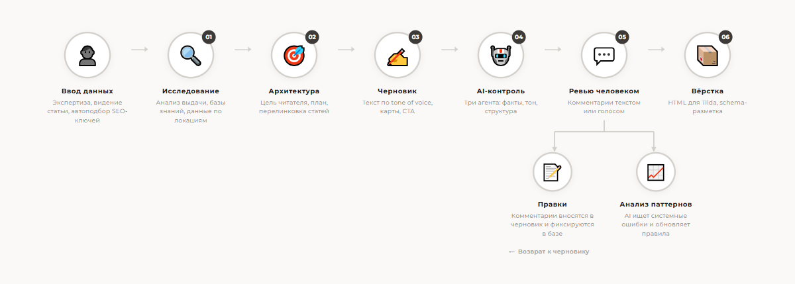
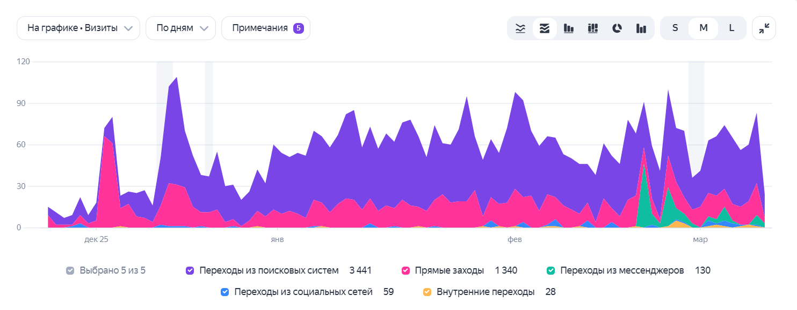

SEO‑пайплайн для статей
Полный цикл: сбор семантики, анализ конкурентов, написание из базы знаний, автоматический fact‑check и tone‑check. Человек добавляет экспертизу.
- У компании нет большого количества ресурсов на контент-маркетинг, при этом есть потенциал для привлечения трафика и клиентов
- При ручном процессе создания и вёрстки статей компания могла выпускать только 1–2 статьи в месяц — этого недостаточно для целей по развитию
- С ускорением процессов компания планирует выпускать 6–8 статей в месяц
Полуавтоматический процесс создания статей сокращает время до 2–3 часов. Основное время уходит на запись голосовых с экспертной информацией, редактуру готовой статьи и отбор фотографий из базы фото, собранной с помощью AI на основе источников компании.
Предварительно проводится автоматический сбор семантики из трёх источников (Serpstat API, Google Suggest, Wordstat) + анализ ТОП-10 выдачи через Perplexity. Система находит пробелы у конкурентов и формирует уникальный угол. На основе этого составлен контент-план на 3 месяца.
Статья пишется с опорой на векторную базу знаний в Supabase — проверенные локации, цены, маршруты. Каждый факт проходит автоматический fact-check. Текст проверяется на соответствие Tone of Voice — разработаны принципы, чтобы текст не звучал как AI.
На выходе добавляются SEO-метаданные, в процессе написания происходит перелинковка с другими статьями. Также настроена автовёрстка — статья сразу получает готовый код страницы.
Как устроен процесс

Результат
Первая статья, написанная по этому процессу, — «Алматы зимой» — стала драйвером SEO-трафика сайта. За 3 месяца статья набрала ~3 600 переходов из поиска. До этого средний трафик сайта со всех статей составлял ~700 пользователей в месяц.

Стек технологий
Стандартно
Специфика проекта
Функциональность
SEO-исследование
- Сбор семантики из Serpstat API, Google Suggest, Wordstat
- Анализ ТОП-10 SERP через Perplexity — структура, объём, пробелы у конкурентов
- Составление контент-плана на 3 месяца на основе исследования
Gap Analysis + Intent
- Определяет пробелы: что нужно спросить у автора, у экспертов
- Формулирует уникальный угол статьи vs SERP
- Генерирует план с обоснованием каждого блока
Написание статьи
- Статья пишется с опорой на базу знаний в Supabase — проверенные локации, цены, маршруты
- Экспертная информация добавляется через голосовые записи автора
- Tone of Voice зашит в процесс — текст не звучит как AI
Фото
- База фото собрана с AI на основе источников компании
- GPS-привязка к локациям — фотографии подбираются автоматически
- Редактор выбирает финальные фото из предложенных
Fact-check + Tone-check
- Автоматическая проверка фактов по чанкам: цены, расстояния, статистика
- Сверка с векторной базой — если данные устарели, уходят на ревью
- Tone-check: удаление канцелярита, восторгов, AI-шаблонов
Финализация + публикация
- SEO-метаданные: title, description — автоматически из research
- Перелинковка с другими статьями в процессе написания
- Автовёрстка — статья сразу получает готовый код страницы для загрузки на сайт
Нужен контент-пайплайн?
Расскажите о задаче — покажу, как ускорить производство контента